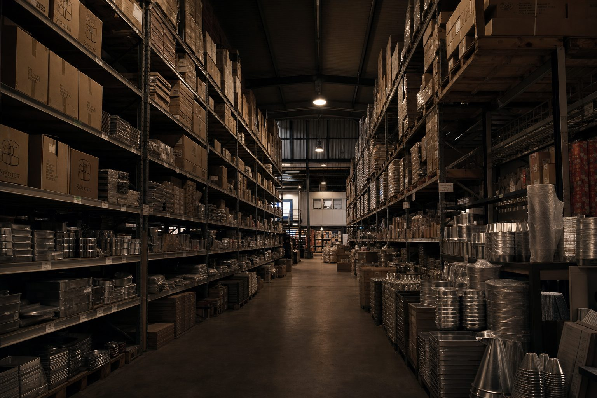
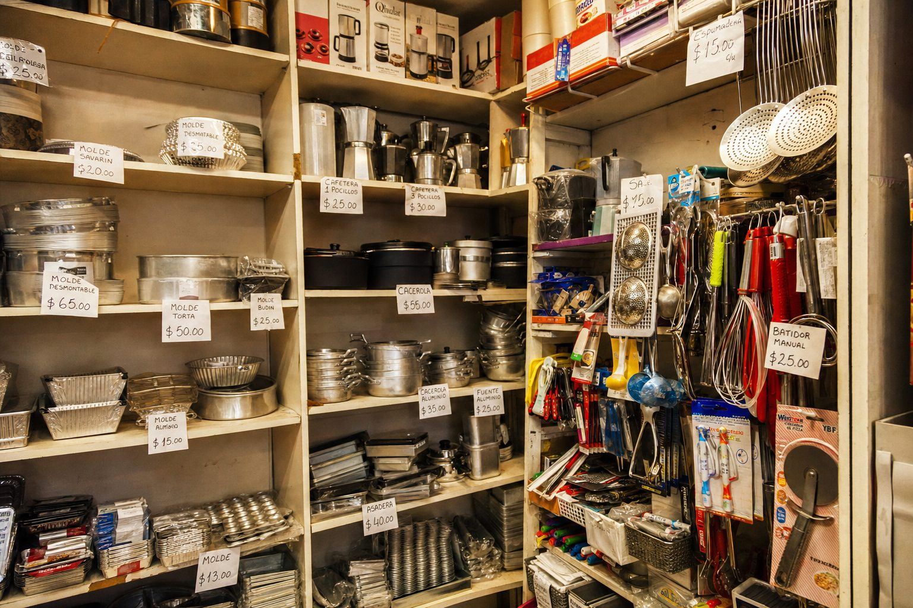
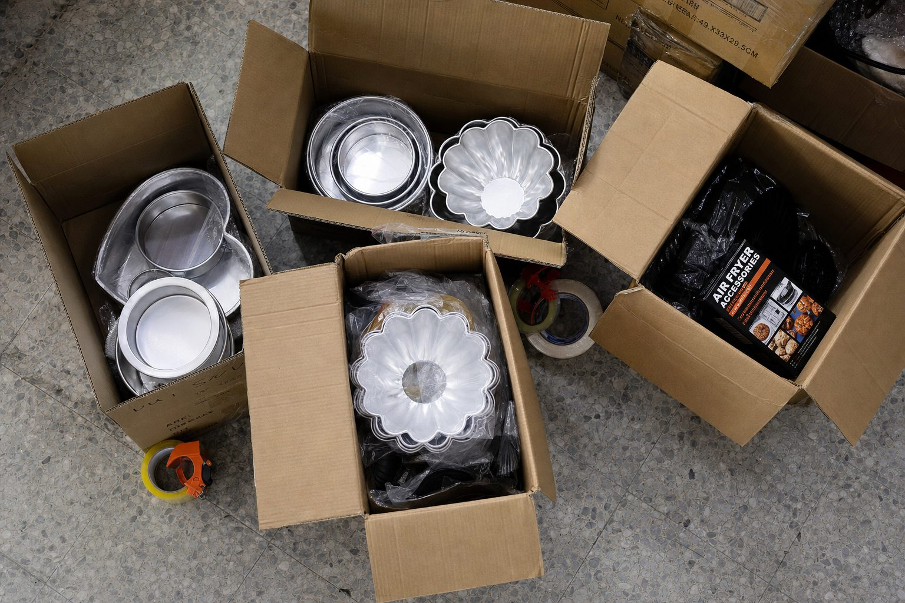
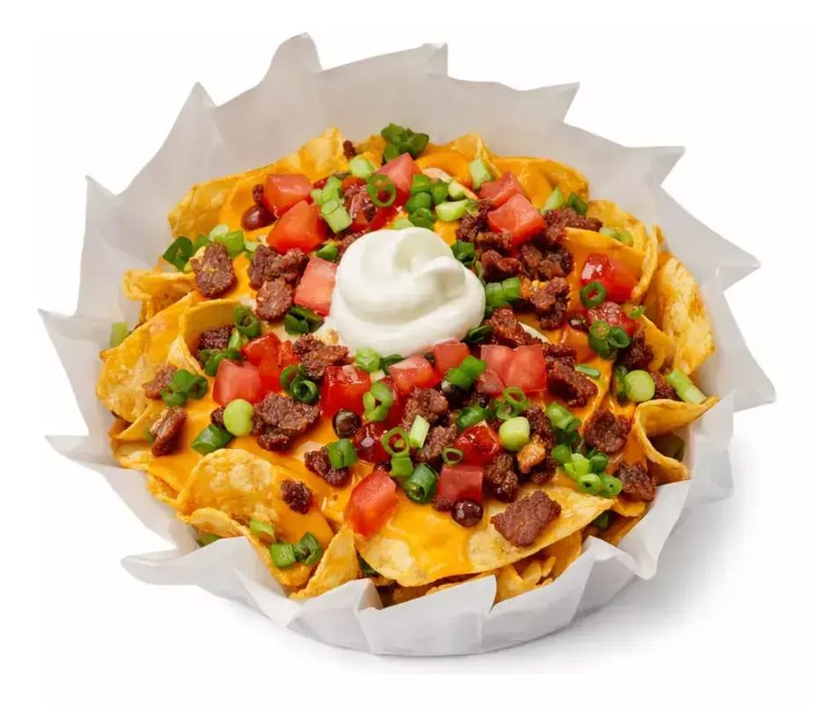
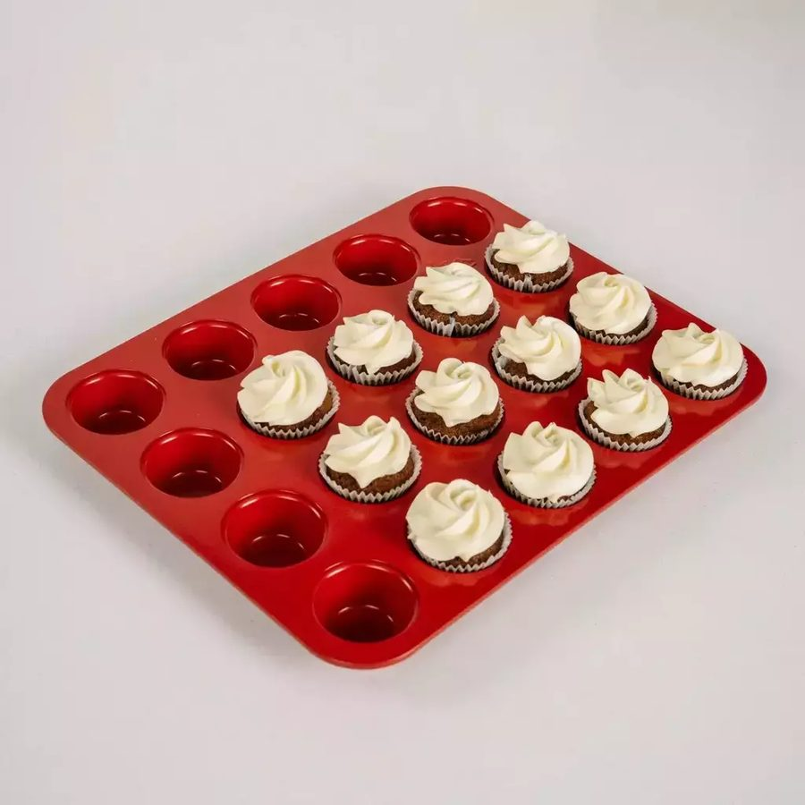
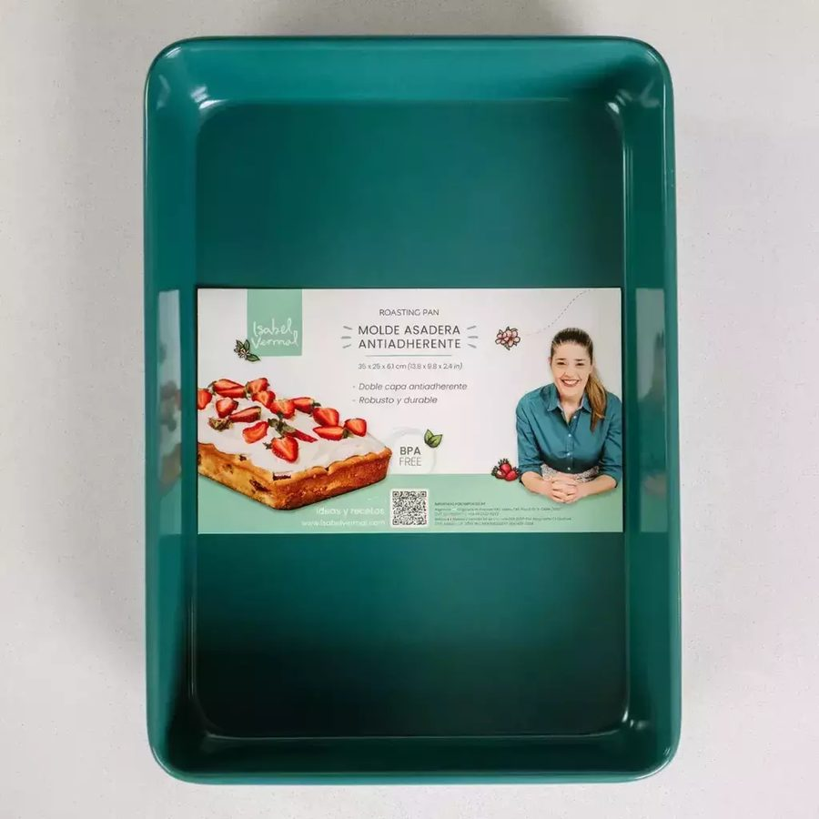
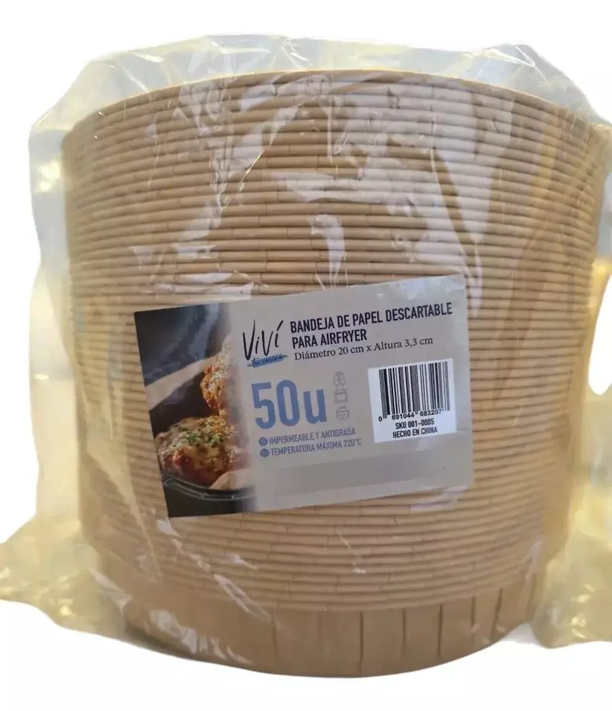
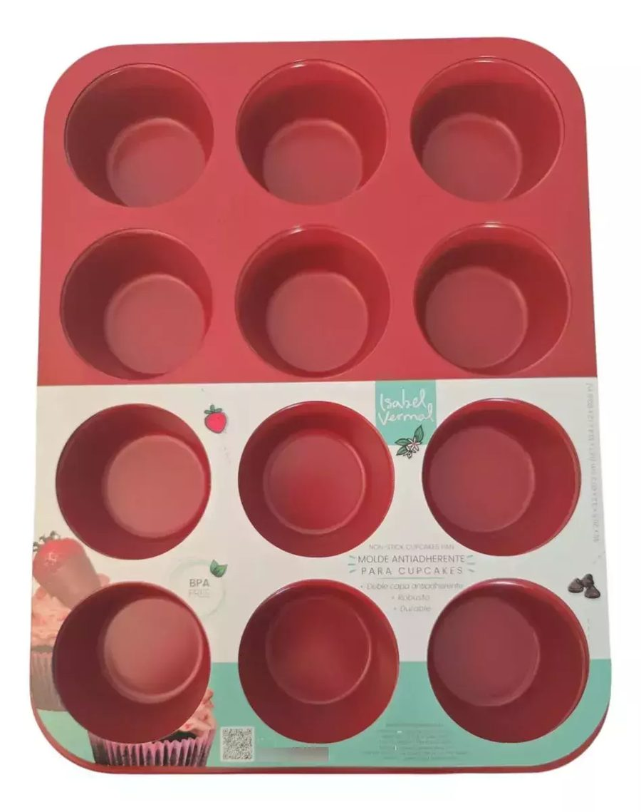
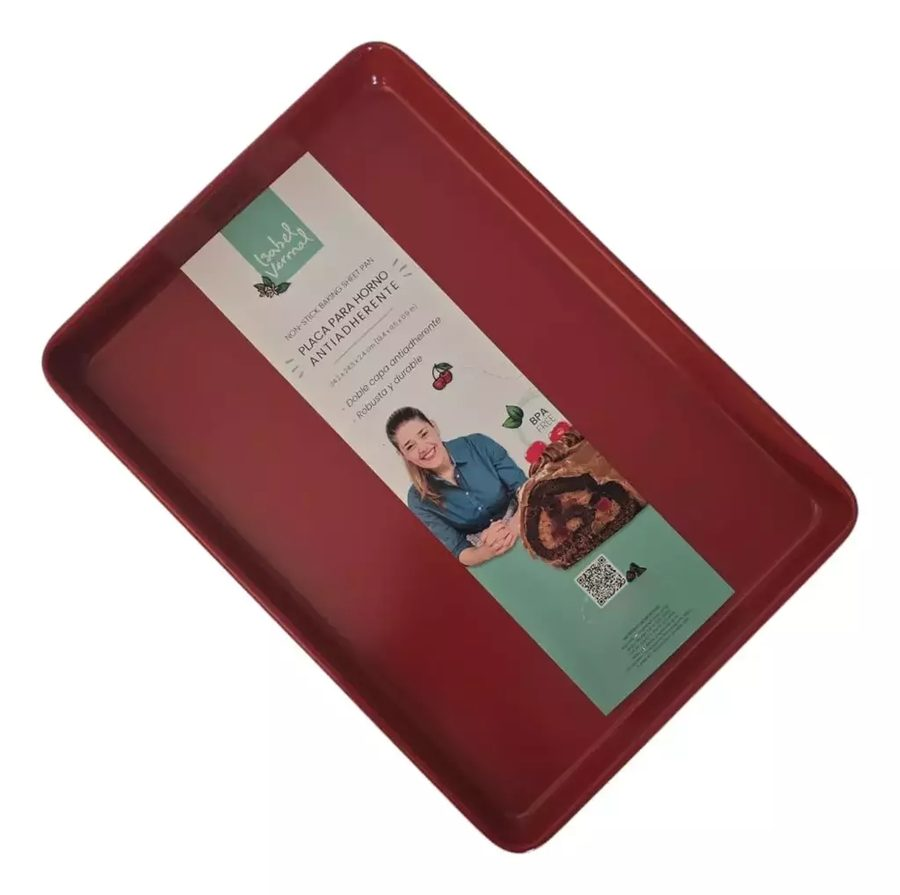
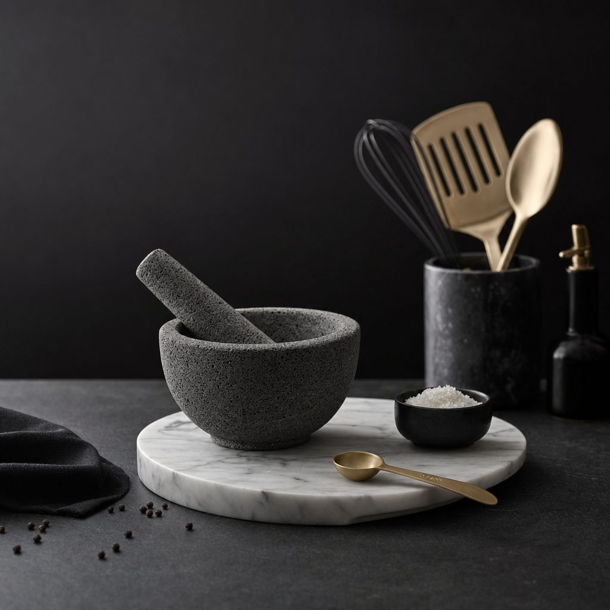

Propuesta estratégica · Titan Web


Titan Web ya está prometiendo venta mayorista. Hoy, el comerciante que pregunta termina en una tienda con precio al público. Esta propuesta construye el camino, lo mide, y recién después le compra tráfico.
Popcorn es una agencia de marketing, comunicación y creatividad que trabaja desde la mirada del negocio. No vendemos publicaciones: vendemos crecimiento. Trabajamos con empresas medianas y grandes, y también con negocios que están abriendo una unidad nueva y necesitan que alguien piense con ellos, no que les entregue contenido y se vaya.
Nico nos dijo que su principal frustración anterior fue la falta de acompañamiento. Lo tomamos como el punto de partida de esta propuesta: reunión semanal, tablero siempre abierto y análisis de leads con el equipo comercial. No una reunión por mes para mostrar un reporte.
 Northfield SchoolEducación
Northfield SchoolEducación Frambuesa DesignDiseño y consumo
Frambuesa DesignDiseño y consumo Mercado ChequeFintech B2B
Mercado ChequeFintech B2B EvelInstrumentos de medición
EvelInstrumentos de mediciónTodo lo que sigue está verificado con URL y fecha. Lo que no pudimos medir con herramienta real, lo decimos: preferimos ser exactos antes que optimistas.
No es un error de tipeo. En todo el sitio, la palabra “mayorista” no aparece una sola vez. Lo único que existe hoy es un WhatsApp compartido con el consumidor final.
Recorrimos la home, las 8 categorías, productos, contacto, preguntas frecuentes y quiénes somos. No aparece “mayorista”, ni “revendedor”, ni “por mayor”, ni “comercio”. El lead B2B no tiene por dónde entrar.
La bio de Instagram dice “Venta mayorista y minoristas — escribinos” y hay una pieza que anuncia “Ahora vendemos por mayor”. El link lleva a la home minorista, con precio al público, 10% OFF y cuotas. Se está gastando atención B2B y entregándola en la vidriera B2C.
El correo de reclamos publicado es un Gmail gratuito con el nombre de otra marca. “Quiénes somos” todavía tiene el texto de ejemplo que trae Tiendanube. Términos y condiciones da error. No hay razón social, CUIT, dirección ni horarios. Y circulan tres teléfonos, dos correos y dos domicilios distintos.
La mudanza de MercadoShops a Tiendanube quedó a medio hacer: hay direcciones de 2022 que siguen apareciendo en Google y devuelven error en lugar de redirigir. Peor: lo que Google tiene indexado es catálogo de juguetería. Hay gente que busca Titan Web, hace clic y llega a una pared.
Titan Web · TITANWEB · Titanwebok · Bazar del Pacífico · TITANWEB S.R.L. · y un nombre de juguetería. Buscar “titanweb” en Mercado Libre no lleva a la tienda oficial. Sin puente entre el marketplace y los canales propios, la estrategia de capturar demanda es imposible.
No hay base de datos propia: el newsletter no ofrece nada concreto, no separa consumidor de comercio, y no hay CRM. Hoy Titan Web no puede volver a hablarle a nadie que ya le compró. En mayorista eso es grave: el negocio se gana en la segunda y la tercera compra.
Bazar, decoración y textiles de hogar es el rubro más golpeado del comercio minorista pyme argentino en 2026 (CAME). Al mismo tiempo, el canal digital crece 41% en volumen. No es un mercado que crece: es un mercado que se está reasignando entre canales.
Consecuencia directa: un comerciante que vende 12% menos no compra más surtido, compra menos riesgo. El titular no puede ser “más variedad”. Tiene que ser “probá con poco, reponé rápido”. La variedad pasa a ser el argumento número dos.

En cerca del 40% del catálogo (193 de 488 publicaciones) Titan Web compite contra el dueño de la marca que revende, con el producto idéntico. Wilton tiene tienda oficial propia; Doña Clara registra más de 1.700 publicaciones. Cuando el producto es el mismo, la única variable que queda es el precio — exactamente lo que Nico no quiere.
La salida de fondo no es marketing: es producto. Exclusividad de importación, surtidos que nadie más tenga y, más adelante, marca propia. Lo decimos ahora porque ninguna campaña resuelve esto sola.
Los clasificamos uno por uno con evidencia: Doña Clara son 121 productos del catálogo de Titan Web — el 25% del surtido. Plus Market y Telaflex también están adentro. Gazatex fabrica tejidos técnicos, no bazar. Y de los cinco nombres, el competidor real del canal mayorista no estaba en la lista.
Además: Megamix ya está pautando el claim que Titan Web quiere usar (“todo en un solo pedido, evitá fragmentar proveedores”) y el nombre “Titán mayorista” ya está ocupado por otra empresa. Hay que decidir el territorio antes de comprarlo.
Ocultar el precio mayorista es la norma, no una desventaja. Lo que nadie resolvió bien es cuánta fricción hay para llegar a él.
7 de 11 competidores no publican precios: tres piden login, cinco derivan a WhatsApp. Los cuatro que sí los publican compiten por precio. Los mínimos de compra declarados van de $70.000 a $700.000, y seis no lo declaran: obligan al comerciante a preguntar solo para saber si califica. Publicar el mínimo es un diferencial que no expone un solo margen.

Traer visitantes a una web que no genera confianza, que no tiene por dónde entrar un comerciante y que no mide lo que pasa, es la forma más rápida de gastar un presupuesto sin aprender nada. Vamos en el orden inverso al habitual, y es a propósito.
Confianza, datos de empresa y deuda técnica. Barato, rápido, y condición para todo lo demás.
Que el canal mayorista exista: landing, calificación de leads, condiciones publicadas y medición.
Contenido y pauta hacia un embudo que ya funciona y ya se mide. No antes.
Sabiendo qué canal, qué mensaje y qué perfil de comercio trajo a cada cliente.
El mercado mayorista está partido en dos y nadie cruzó al medio: los polirrubros tienen repostería como una sección entre diez, y los especialistas están anclados en insumos comestibles — chocolate, fondant, colorantes. Nadie es el mayorista experto en equipamiento: moldes, placas, láminas, descartables técnicos y accesorios de air fryer. Y air fryer ya tiene demanda construida del lado del consumidor, con cero oferta mayorista.
Los once competidores que analizamos ofrecen catálogo y mínimo de compra. Ninguno responde la pregunta difícil del comerciante, que no es “qué hay” sino “qué me conviene comprar”. Titan Web es el único que tiene el dato, porque le vende el mismo producto al consumidor final desde hace años. Es el único territorio que nadie está diciendo y que además se puede probar.
Mínimo de compra accesible, reposición y rotación demostrada. En un rubro que cae, el diferencial no es cuánto surtido tenés: es cuánto capital le pedís al comerciante para empezar. El mínimo bajo deja de ser una condición comercial y se convierte en herramienta de adquisición.
Horneado, air fryer, hogar, cotillón y manicuría: cinco categorías que hoy obligan al comerciante a comprarle a cuatro proveedores distintos. Ese es el claim honesto — y difícil de igualar. No “más productos que nadie”: contra los mayoristas de +5.000 SKUs, esa pelea no se gana y no hace falta darla.






Productos del catálogo actual de titanweb.com.ar. Uno de los primeros entregables es la selección de los 5 a 7 productos estratégicos sobre los que se construye el contenido y la pauta.
El error típico es poner un formulario de contacto. Esto tiene que ser un formulario de calificación: cada campo sirve para decidir si el lead vale la llamada y para que el comercial abra la conversación sabiendo con quién habla. Todo sin publicar un solo precio mayorista.
Un solo mensaje arriba: proveedor mayorista de bazar, cocina y repostería con envíos a todo el país. Nada de precios.
A quién le vendemos: bazares, casas de repostería, cotillonerías, negocios de manicuría, tiendas online, revendedores. Que el comerciante se reconozca — y que el consumidor final se autofiltre.
Condiciones publicadas sin lista de precios: mínimo de compra, plazos, cobertura, medios de pago y compromiso de tiempo de respuesta. Es lo que el rubro no hace y lo que más confianza construye.
Prueba de capacidad: depósito, mercadería, cajas de importación, volumen. En B2B una foto real del stock vale más que cualquier claim.
Cómo se compra, en cuatro pasos. “No sé cómo se compra al por mayor” es una fricción real del rubro y se resuelve explicándolo.
Dos salidas: formulario de calificación y WhatsApp Business separado del canal B2C, con mensaje precargado según de dónde viene el clic.
Comercio identificado, ya vende el rubro, volumen por encima del mínimo y logística resuelta. Va al comercial en el día.
Emprendedor o comercio nuevo, sin volumen definido pero con rubro coherente. Entra a una secuencia, no al olvido.
Consumidor final o por debajo del mínimo. Se lo deriva con amabilidad a la tienda. Eso también es una venta, no una pérdida.
Cuatro ítems de puesta en marcha y cinco de gestión mensual. Cada uno es seleccionable en la sección de inversión: el alcance final lo definimos juntos. Y una Fase 0 de reparación que no cuesta dinero, pero sí decisión.
Poner en condiciones los activos digitales para poder comunicar y medir. Unificación del nombre de la marca en los canales donde hoy aparece de seis formas distintas. Optimización de los perfiles de Instagram y Facebook: bio, destacados y link bifurcado que separe al consumidor final del comerciante — hoy la bio promete venta mayorista y manda a la tienda minorista. Creación y configuración de Meta Business Manager, cuenta publicitaria, píxel y eventos de conversión, Google Ads y GA4. WhatsApp Business separado del canal minorista, con perfil completo y mensajes precargados según el origen del clic. Y la línea de base de medición: hoy no hay manera de saber cuántos leads mayoristas se están perdiendo.
Talleres de trabajo con Nico para cerrar lo que hoy no está definido y bloquea todo: mínimo de compra, condiciones comerciales, plazos, cobertura y compromiso de respuesta. Territorio de posicionamiento y argumentario de venta. Arquitectura de marca y decisión de nombre y dominio del canal B2B — hay una colisión de nombre a resolver antes de invertir. Política de precios y promociones B2C que no canibalice el margen del revendedor. Perfil del cliente mayorista ideal y criterios de calificación de leads.
Diseño, redacción y publicación de la landing B2B completa, con formulario que filtra y califica leads en lugar de solo recibir consultas, y derivación a WhatsApp con mensaje precargado. Más el diseño del catálogo mayorista en PDF de hasta 100 productos, para usar como imán de contacto y como herramienta de venta, sin precios públicos.
El límite no es arbitrario y tampoco es solo una cuestión de horas de diseño: el catálogo mayorista no es el catálogo completo, es la selección que rota. Un catálogo de 100 productos elegidos por rotación real vende más que uno de mil, porque le resuelve al comerciante la decisión en lugar de delegarla. Si más adelante hace falta ampliarlo, se cotiza por tramos.
No incluye hosting, certificado SSL ni soporte técnico posterior. Los cambios y actualizaciones que sufra el catálogo una vez entregado se cotizan aparte.
Titan Web tiene logo pero no tiene manual. Rediseño con continuidad (no se tira a la basura la marca que ya conocen), versiones y aplicaciones, paleta, tipografías, kit de plantillas para redes y piezas comerciales, y una arquitectura que diferencie el discurso B2B del B2C sin romper la marca. Se puede activar desde el inicio o después de validar el canal: nuestra recomendación es arrancar por lo comercial y hacer marca en el mes 3.
El corazón de la relación, y lo que faltó en la experiencia anterior. Reunión semanal de trabajo, no de reporte. Tablero de leads y resultados siempre disponible. Análisis conjunto de la calidad de los leads con el equipo comercial: qué consultan, qué objetan, qué productos piden, de qué zona son, por qué se pierde una venta. Ese retorno vuelve a las campañas cada semana. Reporte mensual de gestión con lectura de negocio, no lista de métricas. Incluye el checklist priorizado de la Fase 0 y su seguimiento.
12 piezas mensuales entre feed, reels y stories, con los dos discursos claramente separados y sin mezclar: consumidor final y comerciante. Incluye concepto, copy, diseño sobre el sistema visual, calendario y publicación. Los cuatro pilares están en la sección siguiente.
No incluye respuesta de mensajes, comentarios ni consultas por privado. Ese punto queda del lado de Titan Web, y no es un detalle: en este rubro una parte de los leads mayoristas entra por mensaje directo, y un mensaje sin responder es un cliente perdido. Definimos juntos quién lo atiende.
Estructura de campañas orientada a comerciantes, no a consumidores. Google Search para captar intención (“bazar mayorista”, “repostería por mayor”, “proveedor de moldes”), Meta para llegar a emprendedores y revendedores y construir marca, y retargeting sobre quien ya mostró interés. Creatividades, textos, segmentaciones, optimización semanal y control de calidad de lead — no de costo por lead barato. Incluye el mantenimiento de la campaña B2C para no descuidar la tienda.
Media jornada mensual de producción en el depósito: fotografía de producto propia — hoy se usa foto de catálogo del proveedor, igual que la competencia —, material de stock y mercadería como prueba de capacidad, y video corto para redes y pauta. Incluye la serie de la importación en curso y, cuando Nico decida dar el paso, las piezas con él a cámara.
Diseño y armado de textos para dos newsletters por mes. Es la pieza que construye el activo que hoy no existe: una base de datos propia. Con dos usos claros y separados — nutrir al lead mayorista que todavía no compró (novedades de importación, productos que rotan, condiciones) y hacer volver al cliente que ya compró una vez, que es donde el negocio mayorista se vuelve rentable.
No incluye los créditos de envío de la plataforma de email.
Hay un bloque de arreglos que no requiere rediseño ni desarrollo: son horas de trabajo, y son la condición para que la pauta rinda. Página institucional con razón social, CUIT y dirección. Email corporativo en el dominio propio, en lugar del Gmail de otra marca que hoy figura como contacto de reclamos. Términos y condiciones. Redirección de las URLs viejas de MercadoShops que hoy devuelven error en Google. Orden de los productos sin stock en el listado. Reseñas de producto activadas.
Lo entregamos como checklist priorizado dentro de la dirección estratégica (ítem 05) y lo ejecuta el equipo de Titan Web, que puede hacer casi todo desde el panel de Tiendanube. Si prefieren que lo hagamos nosotros, se cotiza aparte. Lo que no recomendamos es encender campañas antes de que esté resuelto.
Del mismo modo, el trabajo continuo de e-commerce, SEO y base de datos — fichas, categorías, blog, recuperación de carrito y secuencias de email y WhatsApp para recompra — queda planteado como etapa 2 y se cotiza cuando el canal mayorista ya esté funcionando.
No vamos a intentar comunicar el catálogo entero. Se trabaja con 5 a 7 productos estratégicos y con contenido que además de mostrar, prueba.
Llegada de mercadería, apertura de cajas, volumen, cómo se elige qué se importa. Para el consumidor es contenido de marca; para el comerciante es la respuesta a la única pregunta que importa: “¿me vas a poder abastecer?”. No hay que inventarlo ni producirlo desde cero: está ocurriendo ahora y hoy no se está registrando.
El contenido que ningún competidor puede hacer. “Estos cinco productos son los que más se venden en air fryer, y lo sabemos porque los vendemos todos los días.” Le resuelve al comerciante la decisión de compra, no solo la información.
Demostración, tamaño real, textura, comparativa, usos. Y la línea premium (mármol, piedra volcánica, utensilios de diseño) con fotografía propia: es lo que saca a la marca del lugar de “otro bazar más”, aunque el volumen venga de los productos masivos.
Contenido que le habla al comerciante: cómo comprar, condiciones, cobertura, reposición, y Nico explicando el criterio detrás del surtido. En B2B la confianza es el factor decisivo y el fundador es el activo más creíble que la marca tiene hoy.
Uno: la idea de Nico a cámara es buena, pero el territorio “comerciante real contando su día a día” ya lo ocupa un competidor con 108.000 seguidores. El ángulo diferencial tiene que ser dato de negocio — qué rota, qué conviene, qué se viene — no autenticidad genérica.
Dos: los productos premium de mármol del catálogo actual son todos de una misma marca de terceros. Titan Web puede apropiarse de la curaduría, no del producto. Si el negocio escala a contenedores completos, marca propia es la conversación de fondo que hay que abrir.

Partimos de una premisa concreta: el lead B2B es más caro que el B2C. Un comerciante busca menos veces, compara más y tarda más en decidir, y las búsquedas que importan tienen menos volumen y más competencia. Una inversión chica no alcanza para sostener presencia en esas búsquedas. Por eso los escenarios arrancan donde arrancan. Los montos son sugeridos y ajustables, y la decisión final es de Titan Web.
| Canal | Inversión | % | Qué compra |
|---|---|---|---|
| Google Search | — | 70% | Al comerciante que ya está buscando proveedor. Es intención, no interés: la conversión más alta y el lead más calificado |
| Meta (Instagram y Facebook) | — | 30% | Prueba del perfil emprendedor y revendedor, el único 100% alcanzable por segmentación |
| Total mensual | — | 100% | El piso para que Search tenga presencia real |
| Canal | Inversión | % | Qué compra |
|---|---|---|---|
| Google Search | — | 50% | Captación sostenida de comercios establecidos, con cobertura nacional de términos |
| Meta (Instagram y Facebook) | — | 35% | Frente de emprendedores y revendedores, más construcción de marca sobre el público comerciante |
| Retargeting | — | 15% | Recupera al que entró a la landing o consultó y no cerró. En B2B el ciclo casi nunca se cierra en la primera visita |
| Total mensual | — | 100% | Es el escenario que recomendamos |
| Canal | Inversión | % | Qué compra |
|---|---|---|---|
| Google Search | — | 45% | Cobertura ampliada de términos y de marca propia, ya con datos de qué convierte |
| Meta (Instagram y Facebook) | — | 30% | Escala sobre los perfiles y creatividades que ya demostraron traer leads buenos |
| Retargeting y recompra | — | 15% | Segunda y tercera compra de los clientes ya activos, que es donde el mayorista se vuelve rentable |
| Campañas por región y por categoría | — | 10% | Córdoba, Santa Fe, Entre Ríos y Mendoza concentran cerca de 1.800 comercios del rubro que hoy viajan a Once o pagan flete. Más campañas separadas de air fryer, cotillón y manicuría |
| Total mensual | — | 100% | Se activa cuando el escenario 2 ya mostró qué funciona |
No por calendario ni por entusiasmo. La regla que proponemos, y que revisamos juntos cada mes:
Del 1 al 2: cuando al menos 6 de cada 10 leads sean calificados (comercio real, rubro coherente) y el costo por lead calificado sea pagable con el margen de un primer pedido.
Del 2 al 3: cuando haya ticket promedio mayorista medido, una tasa de cierre conocida y al menos un puñado de clientes con segunda compra. Ahí el costo de adquisición deja de ser un gasto y pasa a ser una inversión con retorno calculable.
Se baja de escenario, sin drama, si la calidad de lead cae o si el stock no acompaña. Preferimos frenar y corregir antes que sostener una campaña que no rinde.
Porque cualquier número que pusiéramos hoy sería inventado, y preferimos decirlo. Para proyectar leads, costo por cliente y retorno hacen falta cinco datos que todavía no tenemos: ticket promedio mayorista, margen por categoría, tasa de cierre del equipo comercial, frecuencia de recompra y capacidad real de atención. Los dos primeros meses de trabajo generan exactamente esa información.
Además, los números de Mercado Libre que surgieron en la reunión (15 ventas mensuales y $40 millones de facturación por mes) son incompatibles entre sí: implicarían un ticket promedio de $2,6 millones sobre productos que van de $6.000 a $21.000. Es el primer dato que necesitamos aclarar, y no lo usamos como base de nada hasta entonces.
A partir del mes 3, la proyección deja de ser una promesa comercial y pasa a ser un cálculo con los datos propios de Titan Web. Ahí sí comprometemos números.
Un lead barato pero irrelevante es un lead malo. La métrica que gobierna todo no es el costo por lead: es el costo por lead calificado, y después el costo por cliente.
| Métrica | Qué responde | Desde |
|---|---|---|
| Leads mayoristas | ¿Existe demanda alcanzable? | Mes 1 |
| % de leads calificados (A+B) | ¿Estamos trayendo comerciantes o consumidores? | Mes 1 |
| Costo por lead calificado | ¿A qué precio entra un comerciante real? | Mes 2 |
| Contactos efectivos y tiempo de respuesta | ¿El lead se atiende o se enfría? | Mes 1 |
| Cotizaciones enviadas | ¿El lead avanza en el embudo? | Mes 2 |
| Clientes mayoristas nuevos | El objetivo real: los primeros 10 | Mes 2-3 |
| Ticket promedio y segunda compra | ¿Es un cliente o fue una venta suelta? | Mes 3 |
| Costo de adquisición de cliente | ¿El canal es rentable y escalable? | Mes 3 |
| % de ventas en canales propios vs. Mercado Libre | ¿Estamos reduciendo la dependencia? | Mes 2 |
| Búsquedas de marca y tráfico directo | ¿La marca empieza a existir sola? | Mes 3 |
| Riesgo | Por qué es real | Cómo lo manejamos |
|---|---|---|
| El WhatsApp mayorista sin dueño ni tiempo de respuesta | Es el riesgo número uno. En B2B la velocidad de respuesta es el principal predictor de cierre. Generar leads hacia un canal que nadie atiende es quemar presupuesto. | Se define antes de encender la primera campaña: quién responde, en cuánto tiempo y con qué guion. Queda escrito como compromiso de Titan Web y se mide todos los meses. |
| Quiebre de stock sobre un producto en campaña | Un comerciante al que le fallás una vez no vuelve. Y hoy el catálogo tiene volumen alto de agotados navegables: en una página del listado, los 12 productos estaban sin stock. | Ninguna campaña se activa sin validar stock, reposición y margen. El plan de contenido se arma contra disponibilidad real, no contra el catálogo completo. |
| Canibalizar al propio revendedor | La tienda comunica 15% de descuento por transferencia y envío gratis. Cuando haya revendedores, eso choca de frente con su margen — justo lo que Nico quiere evitar. | Política de precios y promociones definida en el primer taller: qué categorías admiten promoción agresiva al público y cuáles quedan protegidas como núcleo del mayorista. |
| Dependencia de un proveedor que también es competidor | Una sola marca de terceros representa cerca del 25% del catálogo, y le vende al mismo comerciante que Titan Web quiere captar. | Se prioriza en contenido y en pauta el surtido propio e importado directo. A mediano plazo, exclusividades y marca propia entran en la conversación de producto. |
| Colisión de nombre en el canal mayorista | Ya existe otra empresa posicionada como “Titán mayorista” con más de 5.000 productos. Salir así es competir contra otra marca por la propia búsqueda. | Decisión de naming y dominio en la semana 1, antes de invertir en marca. Es una definición de cinco minutos ahora y un problema caro después. |
| El bazar de bajo precio y el producto importado por courier | Se abrieron más de 250 bazares asiáticos en ocho meses, con precios 30% a 50% menores, y el courier creció 123% interanual. | Es un argumento a favor, bien comunicado: el courier no sirve para revender (tope de 3 unidades iguales por envío y 5 envíos al año). Frente a eso, Titan Web ofrece entrega en 24-72 horas, factura, garantía y reposición. |
La compra mayorista de Navidad y Día de la Madre se define entre fines de agosto y septiembre. Si el canal no está vivo en las próximas semanas, el próximo pico real de compra mayorista es marzo de 2027. No es urgencia de vendedor: es el calendario del rubro.
Accesos y auditoría técnica con Search Console. Taller de definición de la oferta mayorista y decisión de naming. Checklist de la Fase 0 entregado y arrancando del lado de Titan Web: institucional, datos de empresa, políticas, email corporativo y redirecciones. Start up de redes y pauta: perfiles, cuentas publicitarias y medición.
Landing mayorista publicada con formulario de calificación y WhatsApp Business separado. Catálogo mayorista en PDF. Ítem “Mayorista” en el menú del sitio y en la bio de Instagram apuntando al lugar correcto. Kit de venta para el comercial. Primera jornada de producción en depósito.
Campañas de captación activas. Contenido en marcha con los dos discursos separados. Primer análisis de calidad de leads con el equipo comercial: qué perfil consulta, qué objeta, de dónde viene. Ajuste de mensaje y de segmentación con datos propios.
Cierre de los primeros clientes mayoristas y construcción de la proyección real: ticket, tasa de cierre, costo por cliente. Definición de objetivos de facturación B2B con datos, no con supuestos. Arranque de identidad de marca si se decide activarla.
Presión sobre las provincias y las categorías que respondieron. Secuencias de recompra y nutrición sobre la base propia. SEO de fondo empezando a traer tráfico sin costo por clic. Revisión de la dependencia de Mercado Libre con números. Decisión sobre etapa 2: catálogo digital mayorista o e-commerce B2B.
Tildá los ítems con los que quieras avanzar: el correo de respuesta se arma solo con tu selección y el total.
Puesta en marcha, 100% anticipada. 3% de descuento sobre el valor de la puesta en marcha.
Puesta en marcha, en dos pagos. 50% al inicio y 50% al terminar el proyecto o al mes, lo que suceda primero. Sin descuento.
Gestión mensual. Se factura por mes adelantado. Contrato mínimo recomendado de 6 meses: en menos tiempo no hay margen para aprender nada de un canal que arranca de cero.
Inversión en medios. * La abona Titan Web directamente a Google y Meta, con su propio medio de pago y a su nombre. Popcorn no es intermediario ni revende medios. Sobre esa inversión se aplica un 15% de gestión, que se factura junto con el honorario mensual. Los montos de pauta son + impuestos.
Todos los valores son + IVA. Los contratos mensuales se ajustan por IPC.
Elegís los ítems en la sección de inversión y nos llega tu selección por correo. Si querés, lo repasamos juntos antes.
Una reunión de trabajo de dos horas para cerrar la oferta mayorista, el naming y los datos que faltan. De ahí sale el plan definitivo.
Nos das los accesos, montamos la medición y empezamos por la reparación de confianza y la deuda técnica.
Landing mayorista publicada, WhatsApp separado y primeras campañas. Desde ahí, reunión semanal y tablero abierto.
Titan Web no necesita hacer marketing. Necesita construir un sistema de crecimiento que conecte la marca, el contenido, la publicidad, la tienda, los leads, las ventas, el stock y la importación. Nosotros ponemos el sistema y el acompañamiento. Y te vamos a decir la verdad todas las semanas, incluso cuando no sea la que queremos escuchar.
Hablemos y arrancamos